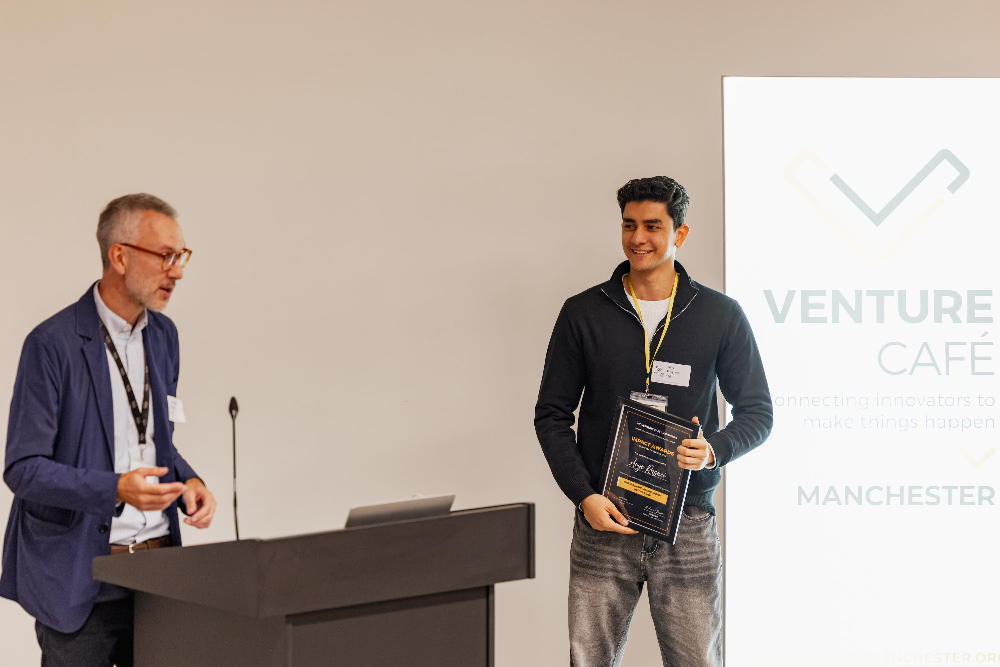

01 / Profile
Curious by nature.
Analytical by approach.
Completed an Analyst & Research Internship at PurposeTech.ai, contributing to three key initiatives: market and competitor research covering the UK charity sector and patient-data platforms; SEO/AEO research to identify content strategies and growth opportunities; and the development and testing of an AI agent to identify journalist requests and support media outreach. The experience combined stakeholder interviews, Excel-based analysis, strategic research and AI automation to support business decisions and operational improvement.
02 / VENTURE CAFÉ MANCHESTER
Community focused.
Connection driven.
As an Ambassador and Presenter at Venture Café Manchester, contributed to an inclusive community by welcoming attendees, facilitating professional connections and supporting 15+ events, including startup networking sessions, entrepreneurship gatherings, pitching activities and innovation-focused events bringing together people from diverse industries. Also hosted Get Pitched, an interactive pitching and networking workshop, strengthening public speaking and facilitation skills. Recognised with the Outstanding Ambassador of the Year award for contributions to the Venture Café community.

03 / Capabilities
A practical toolkit.
A growing set of skills for understanding needs, working with information, and sharing useful findings.
04 / Selected work
Ideas made tangible.
Take a look at selected projects that bring together analysis, research, and digital problem-solving.
 DATA & INSIGHT / 01
Business Intelligence & Data Visualisation
Developed interactive Power BI dashboards analysing UK CO₂ emissions and population trends from 1990 to 2023, using Excel datasets containing 7,585 emissions records and 232 country records.
Power BI · Excel · DAX · Data Analysis
BUSINESS RESEARCH / 02
UK Charity Sector Research & Outreach Strategy
Researched challenges within the UK charity grant-funding market, organising findings across four Excel worksheets and developing targeted outreach strategies for use with Instantly.ai.
Market Research · Excel · Business Analysis · Outreach Strategy
DATA & INSIGHT / 01
Business Intelligence & Data Visualisation
Developed interactive Power BI dashboards analysing UK CO₂ emissions and population trends from 1990 to 2023, using Excel datasets containing 7,585 emissions records and 232 country records.
Power BI · Excel · DAX · Data Analysis
BUSINESS RESEARCH / 02
UK Charity Sector Research & Outreach Strategy
Researched challenges within the UK charity grant-funding market, organising findings across four Excel worksheets and developing targeted outreach strategies for use with Instantly.ai.
Market Research · Excel · Business Analysis · Outreach Strategy
05 / Get in touch
Let's start a conversation.
I’m always interested in connecting with people working across business, data, and digital development.
Contact me →